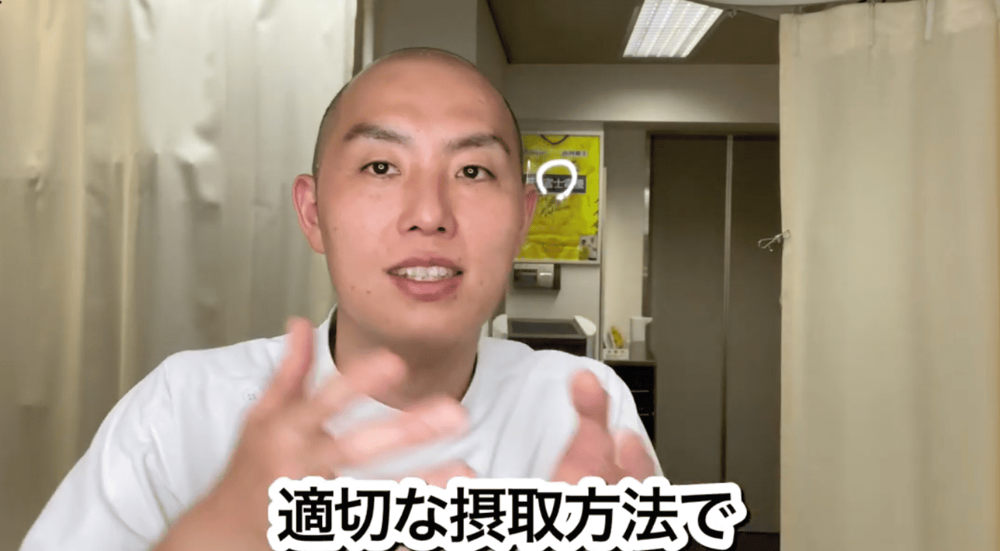
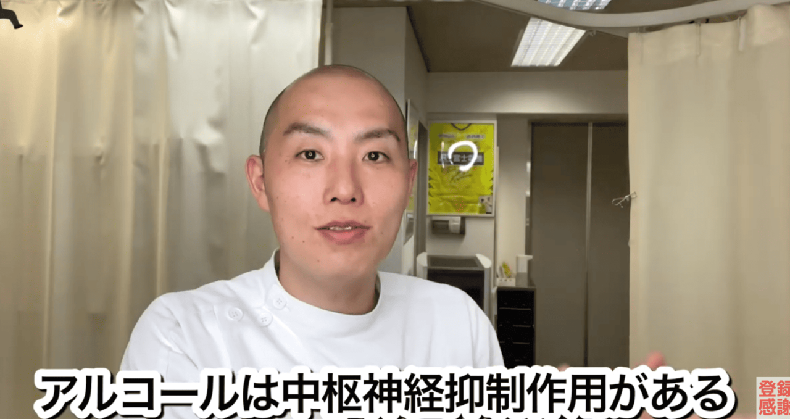
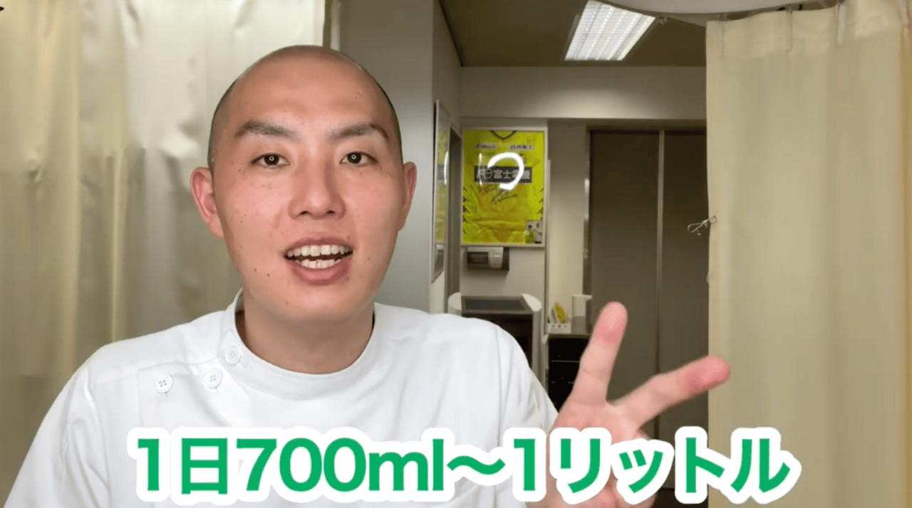
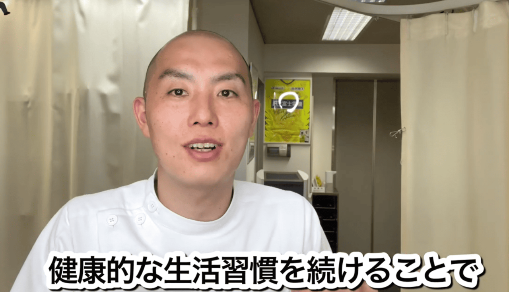
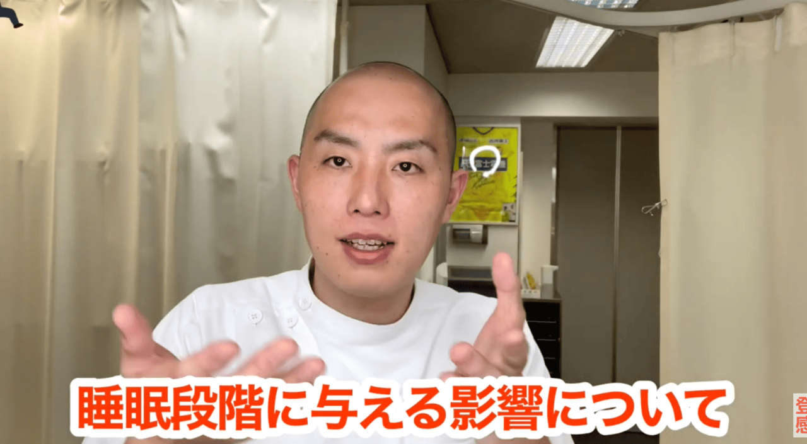
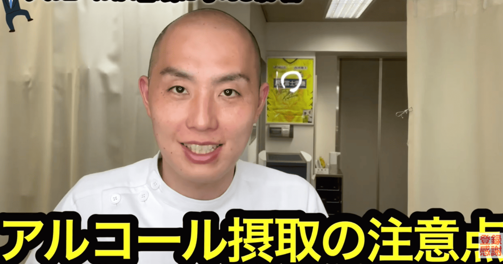
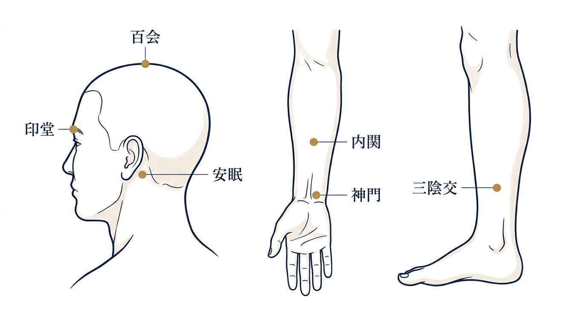

アルコール依存症の鍼灸
脳の報酬系の変化により飲酒を制御できなくなる精神疾患。専門医での断酒治療・離脱管理を最優先とし、安定期の睡眠と自律神経を補完します。
まず知っておきたい要点と改善の流れ
アルコール依存症は、長期の多量飲酒によって脳の報酬系が変化し、強い飲酒欲求とコントロール障害が生じる精神疾患です。寝酒は一時的な鎮静後に睡眠の質を著しく低下させ、急な断酒では振戦せん妄やけいれんなど命に関わる離脱症状を起こすこともあるため、依存症専門医療機関・内科での安全な断酒治療、薬物療法、自助グループ（断酒会・AA等）への参加が不可欠です。（公式解説）
このようなお悩みはありませんか？
- ✓飲酒量や時間帯を自分でコントロールできず飲み続けてしまう
- ✓お酒を抜くと手の震え・発汗・強い不安・不眠などの離脱症状が出る
- ✓寝酒の習慣から逆に眠りが浅くなり日中の強い疲労感が続いている
- ✓肝障害や胃腸障害など身体への影響と断酒中のストレスが不安
当院の施術アプローチ・改善の流れ
なぜ鍼灸で改善へ向かうのか？（作用機序の図解）
アルコール依存症に対する鍼灸は、体性-自律神経反射による交感・副交感神経の切替機序を通じて、お体本来の回復力を引き出します。

首肩・みぞおち・手足の過緊張ポイントへ、交感神経を刺激しすぎない優しい刺激を行います。
体性-自律神経反射を通じて脳幹の迷走神経核へ働きかけ、心拍変動（HF/SDNN）を整えます。
過剰なコルチゾール分泌や過覚醒状態を落ち着かせ、深い呼吸と入眠スイッチを引き出します。
「活動（昼）」と「休息（夜）」のメリハリが戻り、動悸・不眠・倦怠感の波が穏やかになります。
院長YouTube解説・関連動画
アルコール依存症は、精神的な病気

アルコール依存症は、精神的な病気です。何度も繰り返したくさんの量のアルコールを繰り返し摂取することによって、アルコールに依存した状態になり、精神的な障害が起きたりや身体的な機能に障害が起きたりします。
アルコール依存症について意志が弱い、性格の問題であるなどと思う人もいるかもしれませんが、アルコール依存症は個人の性格や意思の問題ではありません。
WHOの策定した国際疾病分類第10版では、精神および行動の障害の中に分類されている病気なのです。
アルコール依存症を発症すると、発症する前は大きな価値をもっていたいろいろな行動よりも飲酒をすることを優先してしまうようになります。
アルコール依存症の原因には、脳の報酬系という神経回路が関係している

アルコール依存症の原因には、脳の報酬系という神経回路が関係しています。アルコールは麻薬と共通する作用があります。アルコールは、依存性のある薬物なのです。
大量に飲酒をしたり、生まれつきアルコールを分解する能力が高い体質をしていたり、未成年の時から飲酒を行なったりすることが、アルコールに依存する要因になります。
他にもアルコール依存症を引き起こす要因として、うつやパニック障害、摂食障害などの精神的な苦痛が挙げられます。
アルコールを摂取することによって精神的な苦痛を和らげようとして、飲酒するようになり、だんだんと飲酒の量が増えることがあるのです。
アルコールは少しの量であれば、体に対して良い効果もあります。
しかし、長時期間にわたって大量にアルコールを摂取する生活を続けると、理性で抑えられないほどの強い飲酒欲求が生まれ、アルコールに対しての慣れにより摂取する量が増えてしまうようになります。
アルコール依存症で現れる症状は、アルコールが抜けたときの崩れて手の震えや幻覚です。体では肝臓に病気が現れたり、脳萎縮や高血圧、膵炎、食道がん、大腸がんなどを発症する可能性があります。
うつやパニック障害、女性の摂食障害なども合併症として現れることが多いです。妊娠中の女性の場合、赤ちゃんの奇形や精神発達遅滞につながることもあります。
①脳の報酬系の異常
アルコールは、脳内の報酬系に働きかけ、ドーパミンという快楽物質を大量に放出させます。一時的な幸福感やリラックス感を得られ、脳がまた飲みたいと強く学習してしまいます。時間が経つと、飲まないとイライラや不安が出るようになります。
②離脱症状による身体依存
長期的に飲酒を続けると、脳がアルコールの存在に慣れてしまい、常にアルコールがあることを前提に機能するようになります。急に飲まなくなると、震えや不安、不眠、けいれんなどが起こります。離脱を回避するためにまた飲む悪循環へ陥ります。
③ストレスや不安の自己処理手段としての飲酒
仕事で疲れたから一杯、人間関係のストレスで飲まずにいられない、不安で眠れないから寝酒をなどの飲酒が続くと、アルコールが感情調整手段になってしまい、依存のリスクが高まります。
④発達特性・トラウマ・愛着の問題
アルコール依存の背景には、以下のような深層心理的な問題があることも少なくありません。幼少期のネグレクトや虐待、自尊心の低さ、孤独感、発達障害によるストレス処理の困難さなどが関係しています。
⑤遺伝的要因
アルコールに強い体質を持っていると、飲酒量が増えやすく依存につながりやすいです。一親等の家族に依存症がある場合、発症リスクは約3～4倍に上がるとされています。
⑥社会的・環境的要因
飲酒が当たり前の文化、一人暮らしや無職など誰にも止められない環境、身近に依存者がいる場合、環境要因は、依存を悪化させるトリガーとして非常に強力です。
アルコール依存症になりやすい要因

アルコール依存症は、飲酒をする人であれば誰でも発症する可能性があります。ただし、アルコール依存症になりやすい要因もいくつかあります。
未成年の時から飲酒していると、アルコール依存症になりやすいということがわかっています。統計でも、飲酒する年齢が早ければ早いほど依存症になる危険性が高いことが知られています。
家族や親友に飲酒をする習慣がある人が多いことも要因の一つです。家族に飲酒する習慣がある場合、依存症に対して警戒心が低かったり未成年のときから飲酒を認めてしまったりする状態が見られるためです。
親がアルコール依存症の場合では、子供が依存症になる確率が4倍に上がると言われています。依存症の原因の半分は遺伝にあるとも言われているのです。
さらに、アルコール依存症の親の家庭では夫婦での喧嘩が多く子供が暴力を振るわれることもあります。そのため、子供は情緒不安定になり、大人になってからアルコール依存症を発症しやすくなるのです。
アルコール依存症を発症している人は男性の方が多いです。しかし、最近では若い女性のアルコール依存症も増えています。
女性は、男性よりも依存症になるまでの期間が短く、同じ量でも血液のアルコール濃度が高くなるため、問題が起きることが多いと言われています。若い女性だけではなく、高齢者のアルコール依存症も最近増えています。
高齢者のアルコール依存症のきっかけとして多いものは、退職や配偶者との別れなどで孤独になることです。アルコールで満足感や安心感を簡単に得るようになるのです。
うつ病やパニック障害の人も、アルコールで気持ちを解決しようとしてアルコール依存症になることも多いです。
- •飲酒量や回数を自分でコントロールできないことがある
- •飲まないとイライラ・不安・手の震え・寝つけないなどの離脱症状が出る
- •飲酒のために大切な仕事や家族との時間を犠牲にしている
- •「今日こそは飲まない」と決めても、結局飲んでしまうことが多い
- •飲酒を隠す、嘘をつく、こっそり飲むことがある
- •飲酒後に覚えていない記憶の欠落がある
- •飲酒のことで家族や友人に注意されたことがある
- •一度飲み始めると、止まらなくなる
- •飲酒によって事故、喧嘩、金銭トラブルなど問題を起こしたことがある
- •飲酒のせいで肝機能異常、高血圧、不眠など健康を害している
- •飲酒に対する罪悪感や後悔を感じることがある
- •「酒がなければやっていけない」と思ったことがある
〈判定の目安〉
0〜2個： 依存のリスクは低いですが、予防意識を持ちましょう。
3〜4個： 軽度のアルコール依存の傾向。生活習慣の見直しが必要です。
5〜6個： 中等度の依存が疑われます。専門家への相談をおすすめします。
7個以上： アルコール依存症の可能性が高いです。医療機関の受診や支援が必要です。

アルコール依存症の改善方法は、カウンセリングや病気の教育、断酒を続ける技術を得ることです。また、飲酒をしない状態で過ごすことのできる生活環境をサポートすることも大事になります。
アルコール依存症の改善の目標は断酒です。ただし、症状が軽く、合併症がない場合は飲酒量を減らすことを目標とする場合もあります。
薬では、離脱症状を抑えるための抗不安薬や人工的に下戸にするための抗酒剤、飲酒の欲求を抑えるための断酒補助剤などを使います。しかし、薬を使うだけでは、断酒をすることはできません。
心理的な面や社会的な面でも断酒ができるように取り組むことが大事になります。
断酒会やアルコホーリクス・アノニマスなどの自助グループもあるため、そのような場所に参加することも改善に役立ちます。
断酒のために参加するのではなく、仲間との交流を通して心理的に改善できるように考えることができたり、コミュニケーションを取ることができたりするために参加をすることで、改善につながる場所になる可能性があるのです。
①本人が依存症であると気づくこと
改善の第一歩は、自分が病的な飲酒パターンに陥っていると受け入れることです。「意思が弱い」のではなく、「脳の病気」として認識します。恥や罪悪感で隠すのではなく、正しく理解することがスタートです。
②専門医療機関に行く
アルコール依存症は、精神科や依存症外来などで改善を受けることができます。
③自助グループの活用
同じ悩みを持つ仲間とのつながりは、回復において非常に重要です。あなたは一人じゃないと感じられることが、再飲酒を防ぐ最大の力になります。
④再飲酒防止の仕組みづくり
再発は依存症では非常によくあることですが、環境や習慣を見直すことで防ぎやすくなります。現金やクレジットカードを持ち歩かない、一人で飲みやすい店や人間関係から距離をとる、飲酒したくなるきっかけを分析し、回避行動を撮りましょう。
⑤感情コントロール力を養う
多くの方は、ストレスや孤独、怒り、不安をアルコールで処理しようとしてしまいます。マインドフルネス瞑想や深呼吸、日記や感情ログを書く、信頼できる人と気持ちをシェア、軽い運動などをして飲まない生活がつまらないのではなく、飲まなくても楽になれる道を脳に覚えさせることが大切です。
⑥人生の目的や役割を再構築する
依存症からの回復は、やめることではなく別の生きがいを手に入れることです。人とのつながり、新しい趣味や学びで誰かの役に立つ体験をして自己肯定感の再構築をしましょう。回復は新しい自分の人生を築くことです。
⑦鍼灸、東洋医学での補助的サポート
自律神経や情緒の安定を目的とした鍼灸や気功なども、再飲酒予防に効果的です。
①自律神経の安定
依存症では、交感神経が過剰に優位になりやすく、興奮・不安・イライラが強くなります。鍼灸は、副交感神経を活性化させ、脳の緊張を鎮める作用が確認されています。衝動的に飲みたくなる、常にソワソワ・イライラする、心拍数の上昇・動悸などの改善に効果が期待できます。
②不眠や睡眠の質の改善
アルコール依存症の多くの方が、眠れない・眠りが浅い・夜中に目が覚めるなどの不眠を訴えます。鍼灸はメラトニン分泌の促進、脳内GABA活性の向上、血流改善と体温調整による入眠の促進などに効果的です。
③胃腸・肝臓の機能回復
長期の飲酒は、肝機能障害・胃腸の炎症・食欲不振・便秘や下痢などを引き起こします。鍼灸では五臓六腑の「肝・脾・胃」の気血を整え、消化吸収・解毒力を高めるアプローチを行います。
④感情の安定
アルコール依存の背景には、孤独・喪失体験・罪悪感・無力感など、深い感情の傷があることが多いです。鍼灸は、単なる身体への刺激ではなく、経絡を整えることで、感情エネルギーの滞りを解消する効果があります。
⑤再飲酒の抑制
最新の研究では、鍼灸が側坐核や扁桃体に影響を与え、依存傾向を緩和する可能性があることも示唆されています。耳鍼や頭部鍼によって、ドーパミン系の過活動を抑える効果が報告されています。
⑥改善したいという気持ちを強化する効果
鍼灸では、自然に改善する力を呼び覚ますことが基本です。そのため、施術の過程で「自分は変われる」「身体が変化している」という回復の実感が芽生えやすくなります。
アルコールの効果と睡眠

アルコールは一時的にリラックスさせる効果がありますが、適量を越えると睡眠に悪影響を及ぼすことがあります。
アルコールは中枢神経抑制作用があるため、リラックス効果をもたらします。しかし、これは一時的で適量を超えると睡眠の質を低下させる原因になります。
🎥 他のYouTube切り抜き・解説を読む（あと1件）▼
アルコール摂取の注意点

１.適量を守る
適量であればリラックス効果を享受できるため過剰摂取は避けましょう。
２.寝る数時間前に摂取することをやめる
睡眠に影響を及ぼさないために就寝の23時間前にはアルコール摂取を控えることが望ましいです。
３.水分補給を忘れない
アルコールは利尿作用があるため脱水状態になりやすいです。そのためアルコール摂取時は水分補給を十分に行うことが大事です。
4.睡眠環境を整える
アルコール摂取後でも良い睡眠環境を整えることが大事です。寝室は静かで暗くて涼しい状態を保ち、快適な寝具を使いましょう。
5.アルコールの対処を助ける
アルコールを適量に抑えるだけではなく対処を促す食品やサプリメントの摂取も有効です。ビタミンB１、ビタミンB６、ビタミンC、ナイアシンなどのビタミン剤はアルコールの対処を助けます。アルコール摂取時に食事と一緒に取ることでアルコールの吸収を穏やかにすることができます。
6.睡眠リズムを整える
アルコールが睡眠段階に与える影響を最小限にするためには睡眠リズムを整えることが大事です。定時的な起床時刻と睡眠時刻を維持し充分な睡眠時間を確保しましょう。
アルコール飲料に含まれるエタノールの割合を示し濃度によって影響が異なります。
〈アルコール度数別の適量摂取量〉
ビールやワインなどアルコール度数５〜12%程の低アルコール度数に対しては、男性の場合1日2〜3缶、高齢者は1日1缶、女性の場合1〜2缶を目安にしましょう。弱い人は1日1缶以下で抑えましょう。
ただしこれは一般的な目安で、個々の体質や健康状態で適量が変わります。妊娠中や授乳中の女性、アルコール依存症、肝臓の病気の方は医師と相談の上で摂取量を考えましょう。適切な度数と量を守ることでリラックこ効果を享受しつつ睡眠の質を維持させましょう。
アルコール依存症を防ぐためには、飲み過ぎないように注意をすることが大事です。
アルコール依存症を発症してしまった場合には、なるべく早く改善を行うことが大事です。お酒の量を減らすためには、毎日飲酒した量の記録をつけることから始めると良いでしょう。
アルコール依存症は改善を行なっても、約7割の人が1年後に大量の飲酒をしてしまうようになるという報告もあります。アルコール依存症は非常に再発しやすい病気なのです。
最近では都道府県や政令指定都市ごとに依存症の専門病院や相談窓口の整備も進められています。問題を抱え込まず、早めに相談することで改善につながります。
不眠・うつ・不安・自律神経失調の全身ツボ図解
実際の施術ではお一人おひとりの体質・症状に合わせて選穴しますが、不眠症・抑うつ・不安障害・パニック・自律神経失調の睡眠・心身ケアの臨床でよく用いられる代表的なツボの目安です。

📌 代表的なツボの詳細一覧表を開く（6穴） ▼
| ツボ名 | 位置の目安 | 主な狙い | セルフケアの注意点 |
|---|---|---|---|
| 百会（ひゃくえ） | 頭頂部の中央 | 脳の過覚醒・考えすぎによる緊張の鎮静 | 就寝前に指の腹で5秒ほど優しく押して深呼吸します。 |
| 印堂（いんどう） | 左右の眉間の真ん中 | 入眠スイッチの切り替え・不安感や焦燥感の緩和 | 目を閉じて軽く触れるだけでも副交感神経が優位になりやすくなります。 |
| 安眠（あんみん） | 耳の後ろの出っ張った骨の斜め下のくぼみ | 入眠困難・中途覚醒・首の緊張緩和 | 枕に当たる首の後ろを温めるとより緩みます。 |
| 内関（ないかん） | 手首の横ジワから指3本分肘寄りの中央 | 胸のざわざわ・動悸・予期不安の鎮静 | 不安を感じたときのセルフケアとしても心強いツボです。 |
| 神門（しんもん） | 手首の横ジワの小指側のくぼみ | 不眠・精神疲労・ストレス応答の安定化 | 心療内科・精神科のお薬は必ず主治医の指示通り継続してください。 |
| 三陰交（さんいんこう） | 内くるぶしの上から指4本分上 | 足元の冷え改善と睡眠リズムの定着 | お風呂上がりの優しい指圧やレッグウォーマーが有効です。 |
国際査読論文の科学的エビデンス
国際的な医学データベース（PubMed・Cochrane等）で報告されている不眠症・抑うつ・不安障害・パニック・自律神経失調の睡眠・心身ケア領域の代表的な査読済み鍼灸研究をまとめています（標準治療との併用や研究上の限界を含めて正確に掲載）。
📚 査読論文データ・PubMed出典リンクを開く（4件） ▼
| 年・研究デザイン | 対象・規模 | 主な結果 | 限界・出典 |
|---|---|---|---|
| 2025年 メタ解析 | 自律神経不調を伴う疾患 10 RCTs（n=744） | 全体適応力指標SDNNが有意改善（MD 13.59, p=0.0091）、重篤な有害事象ゼロ。 | LF・HF・LF/HFは有意差なし、異質性高。 Front Neurosci (PMID: 41230507) |
| 2023年 メタ解析 | 手技鍼 vs シャム鍼 9 RCTs | 実鍼群でのみ施術前後の副交感神経指標HFおよびLF/HF比が有意変化。 | 一次研究の質・異質性にばらつきあり。 Complement Ther Med (PMID: 36494036) |
| 2024年 RCT | 食後愁訴症候群（PDS）解析51名 | 症状反応率（p=0.001）、迷走神経活性HF上昇（p≤0.001）、LF/HF低下（p≤0.001）。 | 単施設・小規模（脳腸相関の根拠）。 Chin Med (PMID: 39568071) |
| 2022年 国内RCT | 更年期女性 48名（日本式鍼7穴×4週） | 鍼群の79%で心拍数が5%以上低下（P<0.01）、鍼中のHF上昇・起立時LF/HF低下を確認。 | 更年期女性限定・4週間の短期評価。 Med Acupunct (PMID: 36311889) |
参考文献・出典
- 銀座そうぜん鍼灸院「アルコール依存症の公式解説ページ」
- 2025年 メタ解析（自律神経不調を伴う疾患 10 RCTs（n=744））— Front Neurosci (PMID: 41230507)
- 2023年 メタ解析（手技鍼 vs シャム鍼 9 RCTs）— Complement Ther Med (PMID: 36494036)
- 2024年 RCT（食後愁訴症候群（PDS）解析51名）— Chin Med (PMID: 39568071)
- 2022年 国内RCT（更年期女性 48名（日本式鍼7穴×4週））— Med Acupunct (PMID: 36311889)
よくある質問（FAQ）
Q. お酒をやめ始めたばかりで手が震えたり汗が出たりする時に受けられますか？▼
Q. 断酒を継続している時期の不眠ケアとして通えますか？▼
あわせて読まれる関連疾患（自律神経のお悩み）
入眠困難や中途覚醒などが続き日中の不調を招く状態です。自律神経の過緊張を鎮め、心身が休息しやすい環境を補完的に整えます。
脳の報酬系の変化により薬物使用を制御できなくなる精神疾患。専門医療機関・回復支援を絶対最優先とし、回復安定期の体調ケアを補完します。
ノンレム睡眠中の部分的覚醒により無意識の性的行動が生じるセクソムニア。専門医の治療を最優先に、睡眠と自律神経の安定を補完的に支えます。
夜間や中途覚醒時の摂食が慢性化する夜食症候群。専門医の指導を前提に、乱れた睡眠リズムとストレス反応の緩和を補完的にサポートします。
鮮明で不快な悪夢により中途覚醒や日中の疲労が続く障害。専門医の評価を前提に、失眠・安眠のツボと自律神経調整で睡眠の質を支えます。
昼食時に一人になることへの強い不安や対人プレッシャーで心身が緊張する状態。必要に応じた相談と並行し、膻中等で自律神経を整えます。
おひとりで悩まず、まずはご相談ください
銀座本院・川口・大宮・横浜・博多・田無の各院でご予約を承っております。